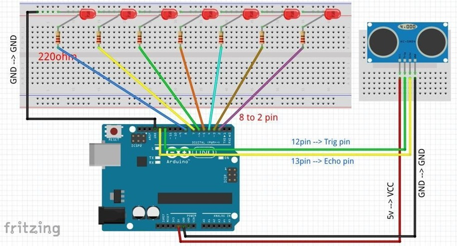

Lampara sensible al tacto con sensor ultrasonico
Este proyecto tiene como finalidad fundamentar y conllevar distintos mecanismos de circuitos simples, mediante la implementación del uso de arduino para la realización de este proyecto, uno de las principales generalidades de este proyecto es conllevar y inculcar el uso de diferentes medios para la realización de circuitos simples, siempre y cuando sea supervisado su proceso.
Se procede a armar el proyectos mediante las siguientes indicaciones:

Se procede a programar la placa de arduino para tener a cabo su funcionamiento
Se hace la conexión de los cables, las resistencias y el diodo LED
Luego de que ya todo este conectado se conecta la placa arduino a una corriente eléctrica para ver si su proceso o su funcionamiento es efectivo
Se adjuntara foto del proyecto en funcionalidad:
Precauciones o riesgos de la práctica
Este proyecto tiene un indice de riesgos muy bajos, basicamente el riesgo mas alto es al momento de la conexión de los componentes a la protoboard, debido que pueden quemarse o hacer corto.
Resultados y conclusiones de la práctica
Como conclusiones para este proyecto cabe recalcar que su función de lamapara sensible al tacto fue un éxito, también se puede evidenciar que durante la practica de este proyecto, se pudo ver una dificultad, la cual fue el montaje del código debido a los parámetros a indicar. Como ya adjunte la foto del proyecto en funcionamiento, adjuntare otro pero mas presentable:

